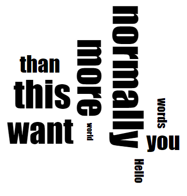
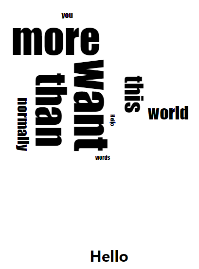
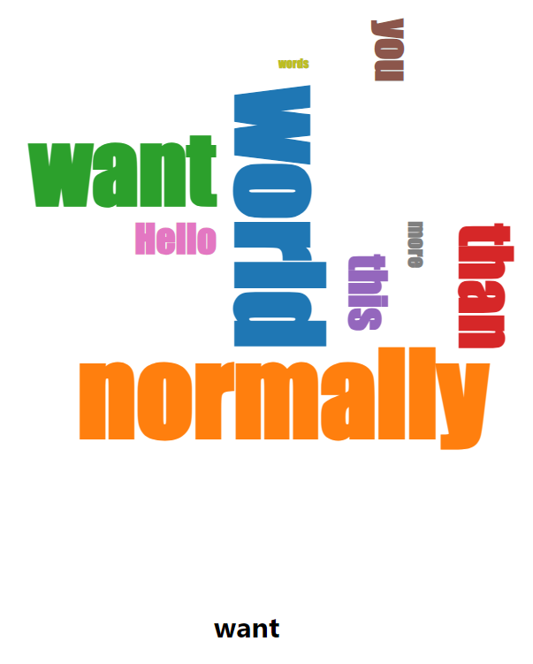

注意
- 筆者はReact歴1週間なので、筋の良い書き方でなかったり、間違った書き方であったりするかもしれない。
- 前半は車輪の再発明をしてしまっている。書いている途中にreact-d3-cloudライブラリの存在に気づいたので、記事の最後にサンプルコードを記載している。
プロジェクト準備
このあたりは人によりけりだが、ここでは次のようにする。
- Reactのビルド環境はDockerないしDocker Composeで構築。
- Reactのプロジェクトは
create-react-appで構築。
それではまずDocker・Docker Composeの構築から。
プロジェクトディレクトリを適当に作成し、そこにdocker-compose.yamlを書く。
version: "3.0"
services:
app:
image: node:20-slim
volumes:
- ./app:/src
ports:
- 3000:3000
command: npm start
working_dir: /src
続いて次のコマンドを実行してcreate-react-appを導入し、実行する。
$ docker-compose run --rm app sh -c "npm install -g create-react-app && create-react-app ."
これによりappディレクトリが作成され、中にReactのプロジェクトが生成される。
このタイミングでD3.jsとd3-cloudも入れておく。
docker-compose run --rm app npm install d3 d3-cloud
これでサーバーを起動してみると、localhost:3000にアクセスできることがわかるだろう。
ちなみに現状ではapp下のディレクトリがコンテナ内のrootで作成されたため、権限の問題で中のソースコードを編集できない。
VSCodeとかだとRemote Containerという拡張を入れることで解決できるらしいが、Vimユーザの自分にとっての正しい解決策はまだ未調査。
今回は、その場しのぎでsudo chownを使うことで、権限を変更しておく。
ひな形作成
WordCloudというコンポーネントを作成し、そこでD3.jsの要素が動かせるかどうか確かめてみる。
App.jsを次のようにする。
import './App.css';
import WordCloud from './component/WordCloud'
function App() {
return (
<div className="App">
<WordCloud />
</div>
);
}
export default App;
component/WordCloud.jsxを次のようにする。
import * as d3 from 'd3';
import { useRef, useEffect } from 'react';
import cloud from 'd3-cloud';
function WordCloud() {
const ref = useRef()
useEffect(() => {
const svg = d3.select(ref.current);
console.log(svg)
console.log(cloud());
}, []);
return (
<svg ref={ref}>
</svg>
);
}
export default WordCloud;
この時点で、デバッグコンソールにsvg要素とd3-cloudのオブジェクトが出力されていればOK。
D3.jsとd3-cloudも認識されているし、svg要素も取得できている。
d3-cloudを用いたワードクラウドの描画
以下のようなコンポーネントMyWordCloudを作成する。
- ワードクラウドの縦、横の長さ、単語のデータ、フォントファミリーを引数にとる。
- ワードクラウドを描画してSVGとして出力する。
まずcomponent/WordCloud.jsxを以下のようにする。d3-cloudのexampleコードを参考に作成した。
import * as d3 from 'd3';
import { useRef, useEffect } from 'react';
import cloud from 'd3-cloud';
const MyWordCloud = ({ width, height, data, fontFamily }) => {
const ref = useRef()
useEffect(() => {
const svg = d3.select(ref.current);
const g = svg.select('g');
g.selectAll('text').remove();
const draw = (words) => {
g.selectAll("text")
.data(words)
.enter().append("text")
.style("font-size", d => `${d.size}px`)
.style("font-family", fontFamily)
.attr("text-anchor", "middle")
.attr("transform", d => `translate(${d.x}, ${d.y}) rotate(${d.rotate})`)
.text(d => d.text)
};
const layout = cloud()
.size([width, height])
.words(data)
.padding(5)
.rotate(d => ~~(Math.random() * 2) * 90)
.font(fontFamily)
.fontSize(d => d.value)
.on("end", draw);
layout.start();
}, []);
return (
<svg ref={ref} width={width} height={height}>
<g transform={`translate(${width/2}, ${height/2})`}>
</g>
</svg>
);
};
export default MyWordCloud;
簡単にわかる範囲だけ書くと、
cloud()でワードクラウドのオブジェクトを生成し、メソッドチェーンでいろいろ設定をしていく。- ワードクラウドオブジェクトの
wordsメソッドにデータを指定する。これは{ text }を持った配列とする。
- ワードの大きさは
fontSizeで指定する。今回はデータにvalue属性を持たせているので、それを指定する。
- ワードクラウドオブジェクトの
startでワードクラウドを生成する。
- 終了時するときに
endイベントが発火するため、そのリスナをonメソッドで指定する。
endイベントのリスナの引数は{text, size, x, y, rotate}を持った配列。これらの情報を使ってSVG要素をよしなに生成していけばよい。- ReactのStrictModeの影響で
useEffectが2回起こる。その際1回目に生成されてしまったワードクラウドを削除するために、g.selectAll('text').remove()を実行している。
これをやらないとDOMで表示されている要素と実際にDOMと結びついている要素とが食い違い、後の節「クリック時の反応の実装」でおかしなことになるので注意。
removeをしなくても、D3.jsのenter/update/exitのうちupdateを変更するよううまく書けば良いのだが、流れを分かりやすくするため今回は割愛。
となっている。
そしてApp.jsは以下のようにする。<WordCloud />を追加した。SAMPLE_WORDSはd3-cloudのexampleコードのものと同じ。
import './App.css';
import { useState } from 'react'
import MyWordCloud from './component/WordCloud'
const SAMPLE_WORDS = [ "Hello", "world", "normally", "you", "want", "more", "words", "than", "this"]
.map(d => ({text: d, value: 10 + Math.random() * 90}));
function App() {
return (
<div className="App">
<MyWordCloud
width={500}
height={500}
data={SAMPLE_WORDS}
fontFamily="Impact" />
</div>
);
}
export default App;
うまくいくと以下のようなページが出力される。

クリック時の反応の実装
クリックしたら、別のコンポーネントにクリックした内容を出力させてみる。
方針としては、[clickedWord, setClickedWord]をuseStateで生成しておき、テキストがクリックされたときにsetClickedWordを呼び出すようにする。clickedWordは別のコンポーネントに読み取らせて描画する。
まずcomponent/WordCloud.jsxのWordCloud関数を次のようにする。onWordClickを追加しただけ。
const MyWordCloud = ({ width, height, data, fontFamily, onWordClick }) => {
// 中略
}
まずcomponent/WordCloud.jsxのdraw関数を次のようにする。styleとon('click', ...)を追加した。
const draw = (words) => {
g.selectAll("text")
.data(words)
.enter().append("text")
.style("font-size", d => `${d.size}px`)
.style("font-family", FONT_FAMILY)
.attr("text-anchor", "middle")
.attr("transform", d => `translate(${d.x}, ${d.y}) rotate(${d.rotate})`)
.text(d => d.text)
.style('cursor', 'pointer')
.on('click', onWordClick);
};
最後に、App.jsを次のようにする。こちらはClickedWordコンポーネントを作成し、Appに設定した。
import './App.css';
import { useState } from 'react'
import MyWordCloud from './component/WordCloud'
const SAMPLE_WORDS = [ "Hello", "world", "normally", "you", "want", "more", "words", "than", "this"]
.map(d => ({text: d, value: 10 + Math.random() * 90}));
const ClickedWord = ({ word }) => {
return (<h1>{ word }</h1>);
};
function App() {
const [clickedWord, setClickedWord] = useState()
const onWordClick = (e, { text }) => {
setClickedWord(text);
}
return (
<div className="App">
<MyWordCloud
width={500}
height={500}
data={SAMPLE_WORDS}
onWordClick={onWordClick}
fontFamily="Impact" />
<ClickedWord word={clickedWord}/>
</div>
);
}
export default App;
うまくいくと以下のようなページが出力される。

react-d3-cloudを用いたワードクラウドの描画
上記を書いた後に気づいたが、同じことをやってくれるものとしてreact-d3-cloudがあった。
これを用いると、クリックした処理を実装したワードクラウドは以下のように書ける。
import './App.css';
import { useState, useCallback, useMemo } from 'react'
import WordCloud from 'react-d3-cloud';
const SAMPLE_WORDS = [ "Hello", "world", "normally", "you", "want", "more", "words", "than", "this"]
.map(d => ({text: d, value: 10 + Math.random() * 90}));
const ClickedWord = ({ word }) => {
return (<h1>{ word }</h1>);
};
function App() {
const [clickedWord, setClickedWord] = useState()
const onWordClick = useCallback((e, { text }) => {
setClickedWord(text);
}, []);
const fontSize = useCallback((word) => word.value, []);
const rotate = useCallback((word) => ~~(Math.random() * 2) * 90, []);
return (
<div className="App">
<WordCloud
data={SAMPLE_WORDS}
font="Impact"
fontWeight="bold"
fontSize={fontSize}
rotate={rotate}
padding={5}
random={Math.random}
onWordClick={onWordClick}
/>
<ClickedWord word={clickedWord} />
</div>
);
}
export default App;
個人的なハマりポイントはuseCallbackを使う点。これを行わないと、クリックのたびにclickedWordの変更を検知してしまい再レンダーされてしまう。
READMEによると<WordCloud>はReact.memoを使っているらしいので、
propsの変更がなければ再レンダーされない。そのため、コールバック関数の再生成を防ぐためuseCallbackを使っている。
